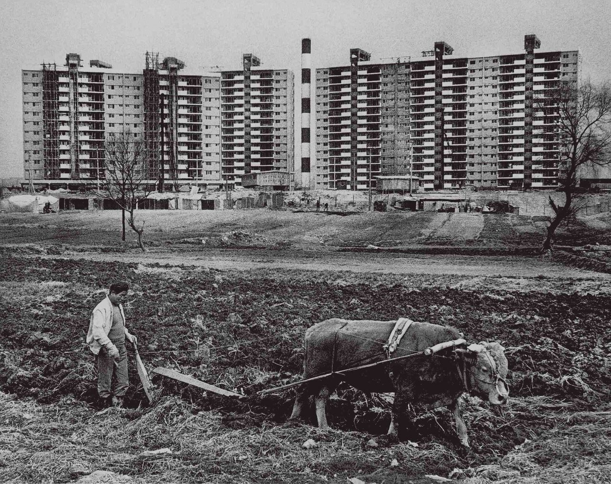
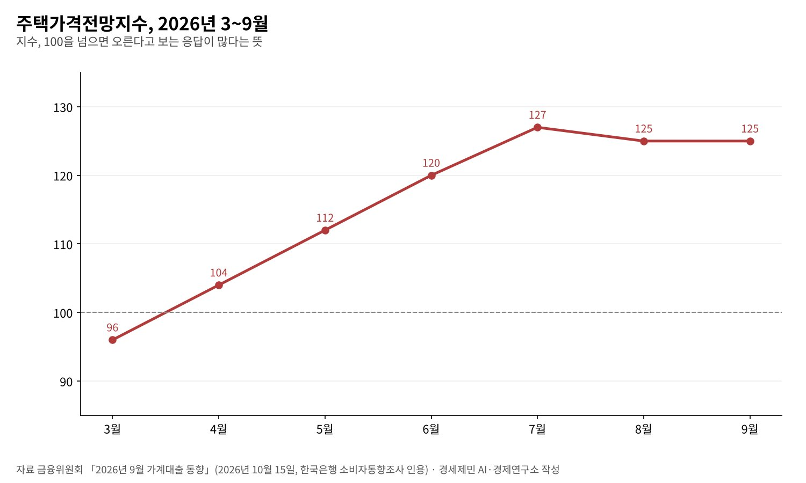
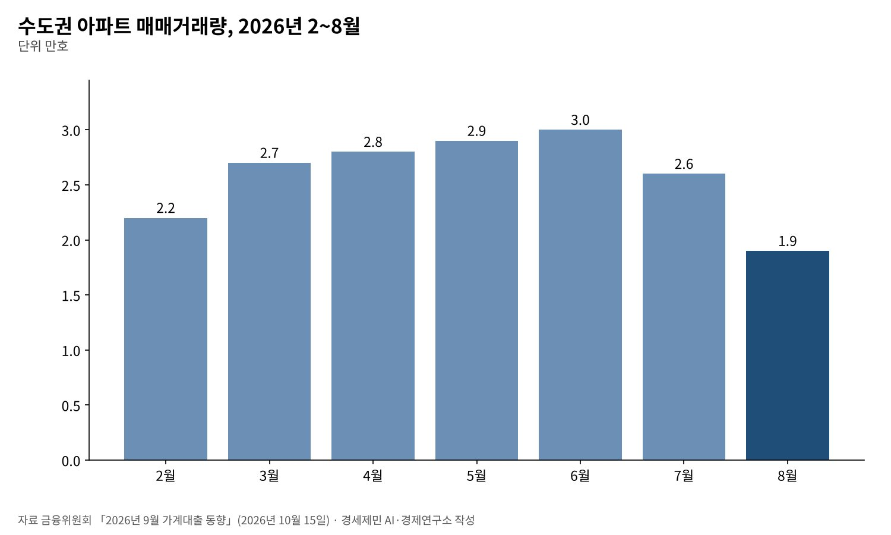

[경세제민] 엉터리 경제학, 공급 대책을 거듭 내놔도 집값 기대는 왜 꺾이지 않나
5년 135만호 착공 목표 위에 8월 수도권 23만호+α 추가, 착공 기간 68개월에서 37개월로
주택가격전망지수 3월 96에서 7월 127, 9월에도 125로 오름 기대가 우세
가계부채 증가율 목표 1.5%에서 3%로, 공급과 함께 신용도 늘어나는 구조
AI경세제민=김갑봉 기자 | 정부는 8월 13일 수도권에 23만호+α를 더 공급하겠다고 발표했다. 2025년 9·7 대책이 내건 5년 동안 수도권 135만호 착공 목표 위에 얹은 물량이다. 신규 택지만 10만호다.
공급 신호는 거듭 나왔다. 그러나 한국은행 주택가격전망지수는 9월 125다. 100을 넘으면 집값이 오른다고 보는 사람이 더 많다는 뜻이다. 3월 96에서 7월 127까지 오른 뒤 내려오지 않는다.
교과서는 공급이 늘면 값이 내린다고 가르친다. 주택시장에서 그 법칙이 더디게, 때로는 거꾸로 작동하는 까닭을 짚는다. 정권의 잘잘못이 아니라 시장의 구조를 본다.

교과서가 전제한 시장과 주택시장
수요·공급 법칙은 완전경쟁시장을 전제한다. 같은 상품을 많은 공급자가 팔고, 누구나 쉽게 들어오고 나가며, 모두가 같은 정보를 갖는다. 사과나 메모리 반도체 같은 대량생산품에는 대체로 맞는다.
주택은 다르다. 같은 넓이라도 입지에 따라 다른 상품이다. 땅은 새로 만들 수 없다. 사업을 하려면 토지와 인허가, 자본이 있어야 해 들어오기 어렵다. 취득세와 대출 이자 같은 거래비용도 크다.
지하철역 같은 외부효과가 값을 바꾸고, 내일 값이 오를 것이란 기대가 오늘 수요를 만든다. 전제가 여럿 깨진 시장에 교과서 처방을 그대로 쓰면 결과가 어긋난다. 엉터리는 법칙이 아니라 적용이다.
땅은 만들 수 없다
주택 가격의 큰 몫은 땅값이다. 땅은 생산할 수 없으니 이미 가진 사람이 팔지 않으면 늘어나지 않는다. 애덤 스미스는 지대를 독점 가격의 성격으로 봤다. 칼 폴라니는 토지를 「허구 상품」이라 불렀다.
공급을 늘리려면 땅을 사야 하고, 개발 소식은 땅값부터 올린다. 오른 땅값은 분양가에 들어가고, 분양가는 주변 시세의 기준점이 된다. 공급이 가격을 낮추기 전에 기준점이 먼저 올라가는 구조다.
헨리 조지는 1879년 『진보와 빈곤』에서 사회가 만든 땅의 가치를 누가 가져가는지를 물었다. 공급 대책의 성패도 개발 이익이 어디로 흘러가는지에 달렸다.
2026년 공급 대책, 세 겹의 약속
정부 공급 대책은 겹겹이 쌓였다. 2025년 9·7 대책은 2026~2030년 수도권 135만호 착공을 목표로 걸었다. 1·29 대책은 과천·태릉 등의 공공부지를 내놨다.
8월 13일 대책은 국토교통부·금융위원회·국무조정실·재정경제부가 함께 냈다. 수도권 23만호+α를 더하고, 공공택지 착공 기간을 68개월에서 37개월 안으로 줄이는 모델을 만든다. 과천·태릉은 2029년 착공이 목표다.
금융 지원도 커졌다. 부동산 프로젝트파이낸싱(PF) 보증과 자금 지원은 26조3000억원에서 47조8000억원+α로 는다. PF 보증은 올해 23조원, 내년 33조원이다.
김윤덕 국토교통부 장관은 「공공이 할 일은 더욱 신속히 추진하고, 민간이 잘할 수 있는 분야는 과감히 지원한다」고 했다. 정부 자료는 수도권 주택 공급의 80% 이상을 민간이 맡는다고 적었다.

공급과 함께 늘어나는 신용
주택은 대출로 산다. 리처드 베르너의 신용창조 이론은 은행이 대출하는 순간 돈이 생긴다고 본다. 은행 신용이 어디로 흐르느냐가 자산 가격을 움직인다. 공급량만큼 신용이 늘면 값은 쉽게 내리지 않는다.
8월 대책은 올해 가계부채 총량 증가율 목표를 1.5%에서 3% 수준으로 올렸다. 늘어난 여력은 공급 촉진과 청년 지원에 쓰겠다고 했다. 이주비와 중도금, 잔금 대출을 원활히 하겠다는 뜻이다.
금융위원회 집계로 올해 1~9월 가계대출은 36조원 늘었다. 주택담보대출은 7월 3조5000억원, 8월 4조3000억원, 9월 3조3000억원 늘었다. 9월 전체 가계대출은 2조2000억원 줄었지만 신용대출 감소 탓이다.
공급을 돕는 대출과 투기를 키우는 대출은 장부에서 잘 구분되지 않는다. 정부는 전세대출 관리와 총부채원리금상환비율 산정 개선 같은 차단 장치를 함께 걸었다. 그 장치가 기대를 누를지가 관건이다.
기대는 공급보다 빨리 움직인다
착공에서 입주까지는 몇 년이 걸린다. 기대는 발표 당일 움직인다. 주택가격전망지수는 3월 96, 4월 104, 5월 112, 6월 120, 7월 127로 다섯 달 연속 올랐다. 8월과 9월은 125다.
거래는 식었다. 수도권 아파트 매매는 6월 3만호에서 8월 1만9000호로 줄었다. 그래도 오름 기대는 높은 채로 남았다. 거래가 줄면서 값 기대가 꺾이지 않는 시장에서는 매물이 귀해지고 호가가 버틴다.
하이먼 민스키는 안정이 불안정을 낳는다고 했다. 오를 것이란 기대가 대출을 부르고, 대출이 값을 올리고, 오른 값이 다시 기대를 키운다. 공급 발표가 이 고리를 끊으려면 물량보다 속도와 대상이 분명해야 한다.

「얼마나」가 아니라 「누구에게」
8월 대책에는 공공 주거 사다리도 들어 있다. 공공분양 물량의 약 15%를 지분적립형과 수익공유형으로 공급한다. 보편형 공공임대와 20년 이상 장기 공공지원 민간임대도 새로 만든다.
반대 방향의 장치도 있다. 2027년 안에 착공하면 주거시설 개발부담금을 전액 면제하고 2028년은 절반을 깎는다. 재개발 조합 설립 동의율은 75%에서 70%로 낮춘다. 속도를 사려고 개발이익 환수를 줄인 셈이다.
공급의 진짜 질문은 물량이 아니라 대상이다. 땅에서 나는 불로소득이 분양가와 대출로 넘어가는 한, 공급은 실수요자보다 기대 수익을 쫓는 쪽을 먼저 채운다. 지분적립형 같은 장치를 넓히는 일이 그 고리를 끊는다.
헨리 조지가 140여 년 전 던진 물음은 여전히 유효하다. 땅값이 오른 것은 땅 주인이 무엇을 해서인가. 사회가 만든 가치를 누가 가져가는지 묻지 않는 공급 대책은 집값 기대를 꺾기 어렵다.
참고문헌
기관 자료
- 국토교통부·금융위원회·국무조정실·재정경제부, 「수도권 23만호+α 추가 공급, 주택 공급 촉진 및 청년 등 실수요자 금융지원 강화」(보도자료), 2026년 8월 13일, 금융위원회 게재. https://www.fsc.go.kr/no010101/87517
- 금융위원회, 「2026년 7월 가계대출 동향(잠정) 및 「확대 가계부채 점검회의」 개최」(보도자료), 2026년 8월 14일. https://www.fsc.go.kr/no010101/87543
- 금융위원회, 「2026년 9월 가계대출 동향(잠정) 및 「가계부채 점검회의」 개최」(보도자료), 2026년 10월 15일. https://www.fsc.go.kr/no010101/87939
연구 논문과 보고서
- (이번 회차에 새로 인용한 연구 논문 없음. 본문의 스미스·폴라니·조지·베르너·민스키는 고전 이론의 요지 소개)
언론 보도
- (이번 회차에 새로 인용한 언론 보도 없음)
[사진 출처]
- [사진1] 전민조, "Apgujeong-dong 1978-04-20.png", 위키미디어 공용, 공공누리 제1유형. https://commons.wikimedia.org/wiki/File:Apgujeong-dong_1978-04-20.png
※ 이 기사는 AI 프로그램 클로드를 활용해 작성했습니다.
관련기사
- [경세제민] 반도체 애치슨 라인, 한국은 어디에 서 있나
- [경세제민] 반도체 글로벌가치사슬과 인천국제공항, 값이 무게를 이기는 시대
- [경세제민] AI 대전환 시대, 인천항만 업계 포용적 성장 방안
- [서평] 슘페터 『경제분석의 역사』 1권, 300년 전 질문이 오늘도 유효하다
저작권자 © AI경세제민 무단전재 및 재배포, AI학습 및 활용 금지